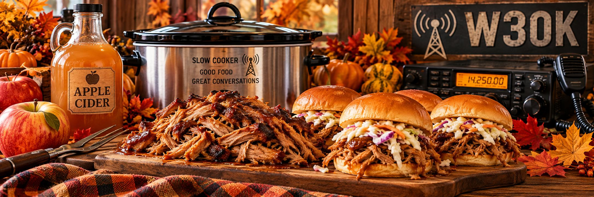

<!-- ============================================================
     From the Ham Shack Kitchen
     October 2026 Recipe
     Slow-Cooker Apple Cider Pulled Pork
     ============================================================ -->

<section class="content-section content-section-seasonal">

    <h2 class="section-header">🍎 From the Ham Shack Kitchen</h2>

    <div class="recipe-intro">
        <p>
            October brings cooler days, colorful leaves, and the unmistakable
            flavors of fall. It’s also the perfect time to dust off the slow
            cooker and let dinner take care of itself while you enjoy an
            afternoon in the shack, work on a project, or head out for a
            club activity.
        </p>

        <p>
            This month’s recipe is
            <strong>Slow-Cooker Apple Cider Pulled Pork</strong>, combining
            tender pork with fresh apple cider, tart apples, onions, and just
            the right blend of sweet, savory, smoky, and tangy flavors. Pile
            it high on a toasted roll, add some crisp coleslaw, and you’ve got
            a hearty fall meal that’s easy to prepare and even easier to enjoy.
        </p>

        <p>
            So grab a jug of cider, fire up the slow cooker, and let’s put
            a little taste of October on the menu!
        </p>
    </div>

    

    <h1 class="recipe-title">Slow-Cooker Apple Cider Pulled Pork</h1>

    <div class="recipe-meta">
        <span>⏱️ Prep: 20 minutes</span>
        <span>♨️ Cook: 8–10 hours</span>
        <span>🍽️ Serves: 8–10</span>
    </div>

    <article class="flowing-columns recipe-content">

        <h3>Ingredients</h3>

        <h4>For the Pork</h4>
        <ul class="padded-list">
            <li>4–5 lb boneless pork shoulder or pork butt</li>
            <li>2 teaspoons kosher salt</li>
            <li>1 teaspoon freshly ground black pepper</li>
            <li>2 teaspoons smoked paprika</li>
            <li>1 teaspoon garlic powder</li>
            <li>1 teaspoon onion powder</li>
            <li>½ teaspoon ground cinnamon</li>
            <li>1 tablespoon olive oil</li>
            <li>1 large yellow onion, sliced</li>
            <li>2 Granny Smith apples, cored and thickly sliced</li>
            <li>4 cloves garlic, minced</li>
            <li>1½ cups fresh apple cider</li>
            <li>2 tablespoons apple cider vinegar</li>
            <li>2 tablespoons Worcestershire sauce</li>
            <li>2 tablespoons brown sugar</li>
            <li>1 tablespoon Dijon mustard</li>
        </ul>

        <h4>For Finishing</h4>
        <ul class="padded-list">
            <li>½–1 cup of your favorite barbecue sauce</li>
            <li>Reserved apple-cider cooking liquid, as needed</li>
            <li>Salt and pepper to taste</li>
        </ul>

        <h4>For Serving</h4>
        <ul class="padded-list">
            <li>Brioche or potato rolls</li>
            <li>Prepared coleslaw</li>
            <li>Thinly sliced Granny Smith apple or pickles, optional</li>
        </ul>

        <h3>Directions</h3>

        <h4>1. Season the Pork</h4>
        <p>
            Pat the pork dry with paper towels. Combine the salt, pepper,
            smoked paprika, garlic powder, onion powder, and cinnamon.
            Rub the seasoning mixture generously over all sides of the pork.
        </p>

        <h4>2. Give It a Good Sear</h4>
        <p>
            Heat the olive oil in a large skillet over medium-high heat.
            Brown the pork for about 2–3 minutes per side. This step is
            optional, but it adds a deeper roasted flavor that makes the
            finished pork worth the extra few minutes.
        </p>

        <h4>3. Build the Slow Cooker</h4>
        <p>
            Spread the sliced onion and Granny Smith apples across the bottom
            of the slow cooker and sprinkle the minced garlic over them.
            Place the browned pork on top.
        </p>

        <h4>4. Make the Apple Cider Mixture</h4>
        <p>
            In a bowl or large measuring cup, whisk together the apple cider,
            apple cider vinegar, Worcestershire sauce, brown sugar, and Dijon
            mustard. Pour the mixture around the pork.
        </p>

        <h4>5. Cook It Low and Slow</h4>
        <p>
            Cover and cook on <strong>LOW for 8–10 hours</strong> or
            <strong>HIGH for 5–6 hours</strong>, until the pork is extremely
            tender and pulls apart easily with a fork. For the best texture,
            LOW is the way to go.
        </p>

        <h4>6. Shred the Pork</h4>
        <p>
            Transfer the pork to a large cutting board or platter. Remove
            and discard any large pieces of fat, then shred the meat using
            two forks. Reserve the apple-cider cooking liquid.
        </p>

        <h4>7. Make It Saucy</h4>
        <p>
            Skim the excess fat from the cooking liquid. Return the shredded
            pork to the slow cooker and stir in ½ cup of barbecue sauce.
            Add the reserved apple-cider cooking liquid a few tablespoons at
            a time, stirring between additions, until the pork is moist and
            juicy without becoming soupy.
        </p>

        <p>
            Taste and add more barbecue sauce, salt, or pepper as desired.
            Cover and cook for another <strong>15–20 minutes on LOW</strong>
            to let all those fall flavors come together.
        </p>

        <h3>Build the Sandwich</h3>

        <p>
            Pile the warm apple cider pulled pork onto a toasted brioche or
            potato roll and top it with a generous spoonful of crisp coleslaw.
            For an extra pop of tart apple flavor and crunch, add a few
            paper-thin slices of Granny Smith apple.
        </p>

        <div class="recipe-tip">

            <h3>📡 Operator's Tip</h3>

            <p>
                Put this in the slow cooker before a Saturday operating
                session. Eight hours later, you'll have dinner ready whether
                you've worked DX all afternoon or spent the entire day
                calling CQ into the void.
            </p>

            <p>
                <strong>Best Sidekicks:</strong> Baked beans, macaroni and
                cheese, potato salad, sweet potato fries, or kettle chips.
            </p>

            <p>
                <strong>Leftovers:</strong> Refrigerate for up to 4 days.
                The pork also freezes well for about 3 months. Reheat it
                gently with a splash of apple cider or a little reserved
                cooking liquid to bring the moisture back.
            </p>

        </div>

    </article>

</section>
```